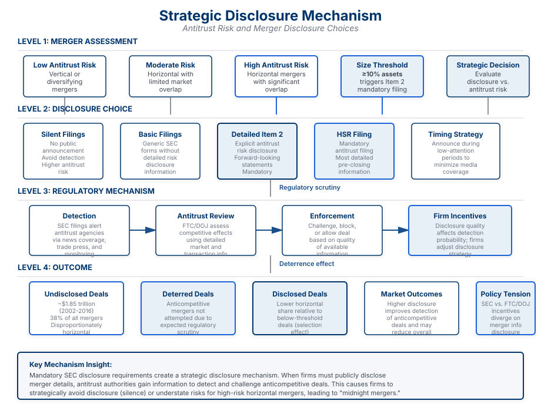

Abstract
We examine how firms disclose information about merger risks in an era of increasing antitrust scrutiny. Using a comprehensive dataset of merger announcements and regulatory outcomes, we analyze whether firms strategically time merger announcements and how they disclosure potential antitrust challenges to markets.
Our findings reveal that firms strategically manage merger disclosures based on expected antitrust scrutiny. Firms facing higher antitrust risk are more likely to provide detailed antitrust risk disclosures and make their announcements during periods of lower market attention. These disclosures significantly affect investor assessments of merger success probability and deal returns, suggesting that disclosure quality plays an important role in merger outcomes.
Key Findings
Strategic Disclosure Timing
Firms with higher antitrust risk make merger announcements during lower attention periods, suggesting strategic timing to minimize initial investor reaction.
Antitrust Risk Communication
Disclosure quality about antitrust risks varies significantly, with firms facing greater risk providing more detailed forward-looking statements about potential regulatory challenges.
Market Impact
Detailed antitrust risk disclosures substantially affect investor assessments of merger success probability and the probability-adjusted returns from mergers.
Regulatory Implications
Strategic disclosure patterns suggest that firms use disclosure management to influence regulatory and investor perceptions of merger risk.
Main Results
The paper uses a fuzzy regression discontinuity design exploiting a sharp threshold in SEC disclosure requirements. When a merger's transaction value reaches 10% of the acquirer's assets, firms must file detailed Item 2 reports disclosing antitrust risks. This natural experiment reveals the causal effect of mandatory disclosure on merger composition.

Figure 1: When transaction value exceeds 10% of acquirer assets, Item 2 reports become mandatory. Panel A shows the first stage discontinuity (37 percentage point increase in disclosure rates). Panel B shows the reduced form: the share of horizontal mergers drops by approximately 30-42 percentage points, suggesting mandatory disclosure deters anticompetitive deals.
The Disclosure Mechanism
The paper develops a theoretical framework showing how firms face a strategic choice: disclose antitrust risks transparently or time announcements to minimize scrutiny. High-risk mergers (particularly horizontal combinations with significant competitive overlap) face the strongest incentives to manage disclosure strategically. When firms must file detailed Item 2 reports, regulators and investors gain timely information about potential anticompetitive effects, which significantly increases the probability that problematic deals are deterred or blocked.

Figure 2: The strategic disclosure mechanism. Firms choose from three disclosure strategies based on antitrust risk: no disclosure (silent filings), basic disclosure (generic SEC forms), or detailed Item 2 reports (explicit antitrust risk communication). Mandatory disclosure requirements shift behavior toward full transparency, enabling regulatory detection of anticompetitive mergers.
Research Contribution
This paper contributes to understanding how disclosure shapes merger outcomes in an era of enhanced antitrust enforcement. We demonstrate that firms actively manage merger disclosures in response to regulatory risk, and that disclosure quality significantly affects both investor and (likely) regulatory assessments of proposed mergers.
The findings have important implications for understanding the information environment in which merger decisions are made, and for evaluating whether markets and regulators have sufficient information to assess merger effects. Our results suggest that disclosure management is an important dimension of merger strategy that warrants closer attention from both researchers and policymakers.